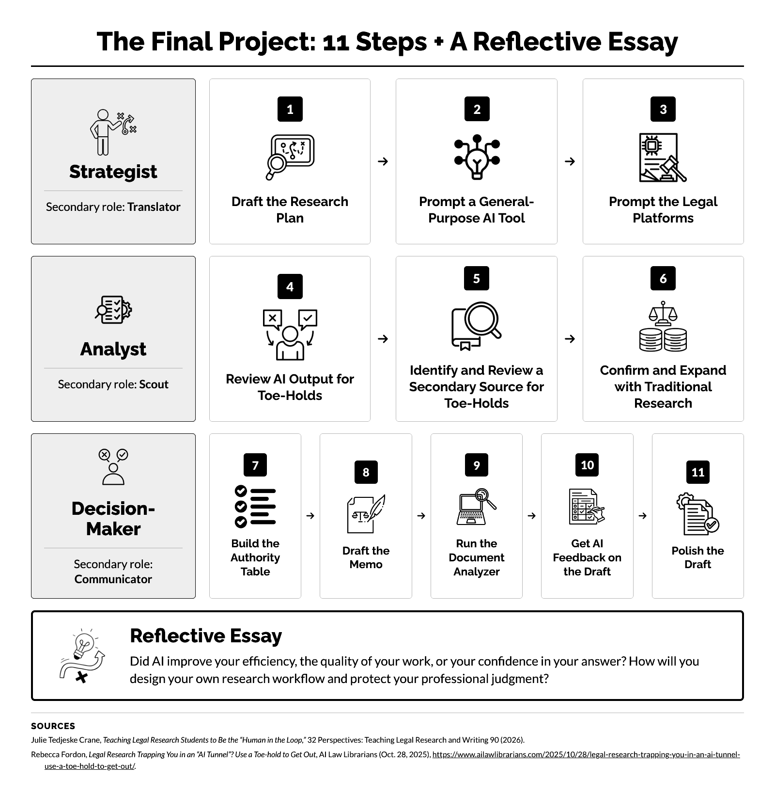

AI and Legal Research › Assignments
Final Capstone Project: Canvas Assignment Pages
The Final Capstone Project runs as one overview page and nine Canvas assignments. Students submit text in some assignments and files in others, and each assignment covers one or more steps of the project. This page gives the HTML for each one so that you can copy it into your own course.
For each page, click Copy HTML code. In Canvas, Blackboard, Moodle, D2L Brightspace, or another learning management system, open the assignment or page, switch the editor to HTML view, and paste the code. Then replace each [date], [time], and [day] placeholder, the links to the optional forms, and any other details with your own. The settings line under each title lists the submission settings that the page assumes.
| Text box | File upload | Text box or file upload |
|---|---|---|
Overview: How to Submit Your Work
Back to topSettings. Create this as a Canvas page, not an assignment. Link to it from the module or from each capstone assignment. Graphic. Download the project graphic (PNG) and upload it to your course Files. In the copied HTML, replace [image URL] with the file’s Canvas URL. The graphic’s alt text and a text description are already in the HTML.

Icons in the graphic. The graphic uses icons from the Noun Project. The CC BY-NC 4.0 license that covers the materials on this site does not cover those icons. Anyone who reuses or adapts the graphic must follow the Noun Project’s own license terms for the icons.
Final Capstone Project · Due [date], [time]
Final Capstone Project: How to Submit Your Work
The graphic below shows the 11 steps of the Final Capstone Project and the reflective essay that follows them. Each of the 11 steps belongs to one of three roles: Strategist, Analyst, or Decision-Maker.

Text description of the graphic
The graphic divides the project’s 11 steps among three roles, each with a secondary role. A reflective essay on the whole project follows the 11 steps.
Strategist (secondary role: Translator). The Strategist’s steps are:
- Draft the Research Plan.
- Prompt a General-Purpose AI Tool.
- Prompt the Legal Platforms.
Analyst (secondary role: Scout). The Analyst’s steps are:
- Review AI Output for Toe-Holds.
- Identify and Review a Secondary Source for Toe-Holds.
- Confirm and Expand with Traditional Research.
Decision-Maker (secondary role: Communicator). The Decision-Maker’s steps are:
- Build the Authority Table.
- Draft the Memo.
- Run the Document Analyzer.
- Get AI Feedback on the Draft.
- Polish the Draft.
Reflective Essay. Reflect on the whole project. Did AI improve your efficiency, the quality of your work, or your confidence in your answer? How will you design your own research workflow and protect your professional judgment?
Sources. Julie Tedjeske Crane, Teaching Legal Research Students to Be the “Human in the Loop,” 32 Perspectives: Teaching Legal Research and Writing 90 (2026); Rebecca Fordon, Legal Research Trapping You in an “AI Tunnel”? Use a Toe-hold to Get Out, AI Law Librarians (Oct. 28, 2025), https://www.ailawlibrarians.com/2025/10/28/legal-research-trapping-you-in-an-ai-tunnel-use-a-toe-hold-to-get-out/.
You submit the Final Capstone Project in a series of Canvas assignments. For the text box assignments, you type or paste your written work into the assignment’s text box. For the file assignments, you upload files. The title of each assignment tells you what to enter in that assignment.
All assignments are due [day], [date], at [time]. You may submit each assignment as soon as you finish it, and you may resubmit any assignment before the due date. Your instructor grades your most recent submission of each assignment.
A Canvas submission holds either text or files, but not both. For that reason, your written work for Steps 2, 3, 9, and 10 goes in text box assignments, and the files for those steps go in separate upload assignments.
The table below groups the assignments by submission type.
| Text box | File upload | Text box or file upload |
|---|---|---|
|
|
|
Upload your objective memo for Step 8, but wait to upload it until you have the final, polished memo after you finish Step 11. Step 11 has no separate submission.
Keep Your Name Out of Your Work
Do not put your name anywhere in your submissions. Do not put your name in any file name, and name each file exactly as the assignment instructions show.
Your name may appear on some AI output reports. I realize that some platforms print your name on their reports, for example, in a header. That is fine. You may redact your name from a report if you want to, but you do not have to. If you redact your name, do not change anything else in the report.
Citations
I grade citation format in only one place: your Step 8 memo. The memo must use Bluebook citation format, but I will deduct points for Bluebook form only when errors are serious, for example, when a citation is so incomplete or so far from Bluebook form that a reader would have trouble finding the authority. Other serious errors include a citation that names the wrong court and a citation that fails to identify a concurring or dissenting opinion as a concurrence or a dissent. These are examples, not an exhaustive list.
Every citation must lead the reader to the exact place that supports your proposition. Give a pinpoint citation (the page or paragraph) for every case that you cite for a proposition, and cite the exact subsection of every statute, court rule, or regulation.
I do not grade citation format in any other submission, including the toe-hold reviews and the authority table, so in those submissions, Bluebook format is appropriate but not required. AI can help with basic Bluebooking, especially for case citations, but it is far from perfect. AI for Bluebooking works best when you understand the rules well enough to spot when a citation is “off.”
Optional Drafting Forms and Required Authority Table
Two optional forms can help you draft your text submissions. Both forms collect your work in a box at the bottom, and you copy the text from that box into a Canvas text box. The forms are optional, and you use them at your own risk. The forms do not save your work and do not send anything to Canvas, so copy your text out of a form and check that it appears in Canvas before you close the form’s browser tab. You can always type your work directly into Canvas instead.
- Research Plan and Prompt Record (Steps 1 to 3)
- Toe-Hold Review and Comparison Essay Form (Steps 4 and 5)
For Step 7, you do not use a form: you fill in the Word template that the Step 7 assignment links to. Use of the Word template is not optional.
Before You Submit Each Assignment
- Check the word count at the bottom right of the Canvas text box against the word limit for that step.
- After you submit files, open each file in Canvas and confirm that the full output appears.
Show the HTML code
Steps 1 to 3: Text Box for Research Plan and Record of Prompts
Back to topSettings. Submission type: Online text entry. Attempts: unlimited.
Final Capstone Project · Steps 1, 2, and 3 · Text box · Due [date], [time]
Text Box for Research Plan (Step 1) and Record of Prompts for Steps 2 and 3
Submit your Step 1 research plan and your record of the prompts that you ran in Steps 2 and 3. You upload the AI outputs to the assignment Upload AI Output from Steps 2 and 3, not to this assignment.
You can complete this assignment in either of two ways. Both ways earn the same credit.
- Option 1: Use the optional Research Plan and Prompt Record. Complete the Research Plan and Prompt Record, copy your work from the box at the bottom of the form, and paste it into the text box for this assignment. Click inside that box to highlight all of the text before you copy it. The form can also save your work as a Word document: click Download as Word. The form is optional, and you use it at your own risk. The form does not save your work, so check that all of your text appears in the Canvas text box before you close the form’s browser tab.
- Option 2: Type your answers directly into Canvas. Type your answers into the text box for this assignment under the headings below. You do not need the form.
Step 1: Research Plan
- Issue: the issue to be researched, stated as one or more neutral questions.
- Jurisdiction and court.
- Key facts: only the facts that change the legal analysis.
- Procedural posture.
- Client’s ultimate goal.
- Specific task: what the client or assigning attorney has specifically asked you to research or do.
- Governing law: whether current law governs, and if not, the time period whose law applies.
Step 2: General-Purpose Prompt
Run one prompt in one tool, chosen from [your authorized general AI tools]. If a tool requires your institutional account, use that account. Give the tool that you ran it in, the date, the model and mode settings, and the full text of the prompt. Use these headings:
Record the settings that you used, because the settings change what a tool returns. Some tools let you select an underlying model or use the default, so record the model’s name or write “Default.” Many tools also offer a deep reasoning or deep research mode, so record whether you used one. Some tools let you choose sources, such as legal sources, web sources, or both, so record the sources that you selected.
Example headings for Step 2
Tool: [the tool that you used]
Date: [the date that you ran the prompt]
Model and mode settings: [the model, or “Default”; whether you used a deep reasoning or deep research mode; the sources that you selected, if the tool lets you choose]
Prompt text: [the full text of the prompt]
Step 3: Legal AI Tool Prompt
In Step 3, you run your prompt on two platforms: [legal AI tool 1] and [legal AI tool 2]. You might need to make minor variations for a platform, but the prompt should be essentially the same on both platforms. Run the same prompt everywhere so any differences in the platforms’ outputs come from the tools, not the prompt. Give the full text of your prompt once. Then give a separate block for each platform. In each block, give the date that you ran the prompt, the sources and jurisdiction that you selected, and any variation that you made to the prompt for that platform. Use these headings:
Some platforms let you search the platform’s own content, the web, or both, so record which you chose. Some platforms also let you set a jurisdiction, so record any jurisdiction that you set. Some platforms offer more than one version of an answer, such as a concise version and an expanded version, so record the version that you chose.
Example headings for Step 3
Prompt text: [the full text of your prompt]
[Legal AI tool 1]
Date: [the date that you ran the prompt]
Sources and jurisdiction: [the platform’s own content, the web, or both, and any jurisdiction that you set]
Variation: [the change that you made for this platform, or “None”]
[Legal AI tool 2]
Date: [the date that you ran the prompt]
Sources and jurisdiction: [any jurisdiction or source filter that you set, or “None”]
Version: [the version that you chose, such as concise or expanded, if the platform offers more than one]
Variation: [the change that you made for this platform, or “None”]
Reminders
- You may not use AI in Step 1. Complete the research plan before you open any research tool.
- Write the Step 2 and Step 3 prompts yourself, without AI. You must use AI to run them.
Do not put your name anywhere in your submission.
Show the HTML code
Steps 2 and 3: Upload AI Output
Back to topSettings. Submission type: File uploads. Restrict upload file types: docx, pdf. Attempts: unlimited.
Final Capstone Project · Steps 2 and 3 · File upload · Due [date], [time]
Upload AI Output from Steps 2 and 3
Upload the full output of each prompt you ran in Steps 2 and 3, and name each file exactly as shown in the table below.
| Output | File name |
|---|---|
| Step 2 | Step2_Output |
| Step 3, [legal AI tool 1] | Step3_Tool1_Output |
| Step 3, [legal AI tool 2] | Step3_Tool2_Output |
Your name may appear on some of the output reports. I realize that some platforms print your name on their reports, for example, in a header. That is fine. You may redact your name from a report if you want to, but you do not have to. If you redact your name, do not change anything else in the report.
Before you upload
- Name each file exactly as the table shows. Do not put your name in any file name.
- Upload all of your files sequentially in one submission. After you attach the first file, click Add Another File to attach the next one, and then click Submit Assignment. If you submit again, reattach every file, because your instructor grades your most recent submission.
How to Save an AI Output
Save the full output, not a summary or an excerpt. If the tool offers a download or export option, use that option. If it doesn’t, copy the full output into a Word document and save it. Save each file as a Word document (.docx) or a PDF.
Save each output when you run the prompt, because some tools do not keep your history, and you may not be able to recover an output later.
Show the HTML code
Steps 4 and 5: Text Box for Toe-Hold Reviews, Secondary Source Review, and Comparison Essay
Back to topSettings. Submission type: Online text entry. Attempts: unlimited.
Final Capstone Project · Steps 4 and 5 · Text box · Due [date], [time]
Text Box for Toe-Hold Reviews, Secondary Source Review, and Comparison Essay (Steps 4 and 5)
In this assignment, you submit three things:
- Your toe-hold reviews of the AI outputs (Step 4): one review for each of your three AI outputs from Steps 2 and 3.
- Your review of the secondary source (Step 5), labeled Review D.
- Your comparison essay (Step 5), of no more than 300 words.
You can complete this assignment in either of two ways. Both ways earn the same credit.
- Option 1: Use the optional Toe-Hold Review and Comparison Essay Form. Complete the Toe-Hold Review and Comparison Essay Form, copy your work from the box at the bottom of the form, and paste it into the text box for this assignment. Click inside that box to highlight all of the text before you copy it. After you paste the text, you may rework it in the Canvas text box, for example to format headings or other text so that the reviews are easier to read. The form is optional, and you use it at your own risk. The form does not save your work, so check that all of your text appears in the Canvas text box before you close the form’s browser tab.
- Option 2: Type your answers directly into Canvas. Type your answers into the text box for this assignment under the headings below. You do not need the form.
Step 4: Toe-Hold Reviews
Write each toe-hold review before you verify anything. You write these reviews:
- One review for the general AI output from Step 2 (Review A).
- One review for the [legal AI tool 1] output from Step 3 (Review B).
- One review for the [legal AI tool 2] output from Step 3 (Review C).
Begin Review A with the name of the tool that you used, for example, “Review A: [tool name].”
Each review contains four parts. Give each part its own heading:
- Conclusion. A short summary of the output’s conclusion, in one to three sentences.
- Statutes, Court Rules, Constitutional Provisions, and Regulations. Any potentially relevant statute, court rule, constitutional provision, or regulation that the output cited.
- Cases. No more than five potentially relevant cases. List a case only when it looks important. For each case, give three lines:
- the case name and citation;
- Why it matters: one or more of these reasons, separated by semicolons: Binding authority; States a legal test or definition; Closely matches the facts; or another reason that you name; and
- Short description: a sentence or phrase that describes the case.
- Secondary Sources. No more than three secondary sources that the output listed and that you might review. If the output names a section or chapter of a secondary source, include the section or chapter.
Example headings for one review
Conclusion: [one to three sentences]
Statutes, Court Rules, Constitutional Provisions, and Regulations: [each one that the output cited, or “None cited”]
Cases: [no more than five cases, each in three lines, like this:]
1. [case name and citation]
Why it matters: [for example, Binding authority; Closely matches the facts]
Short description: [a sentence or phrase that describes the case]
Secondary Sources: [no more than three, with the section or chapter if the output names one]
Step 5: Secondary Source Review (Review D)
In Step 5, you set the AI tools aside and research the issue in one traditional secondary source, such as a treatise, a practice guide, a legal encyclopedia, an ALR annotation, or a law review article. The point of this step is to compare what an expert human author says about the issue with what the AI tools told you. Choose one source, and read the sections of that source that discuss the issue. You may use more than one section of the same source. You may use an AI tool or a library research guide to help you choose the source, but you must read the source itself. An AI tool’s summary of a source does not count as the source.
Begin Review D with the source’s full citation, the sections that you used, and the kind of secondary source it is. Then give the same four parts, with the same four headings, drawn from the secondary source: the source’s conclusion on the issue; the statutes, court rules, constitutional provisions, and regulations that the source cited; no more than five cases that the source cited; and no more than three other secondary sources that the source cited, with the section or chapter of each if the source names one.
Example headings for Review D
Citation: [the source’s full citation]
Sections Used: [the sections that you read]
Kind of Source: [for example, treatise, practice guide, legal encyclopedia, ALR annotation, or law review article]
Conclusion: [one to three sentences]
Statutes, Court Rules, Constitutional Provisions, and Regulations: [each one that the source cited, or “None cited”]
Cases: [no more than five cases, each in three lines, like this:]
1. [case name and citation]
Why it matters: [for example, Binding authority; Closely matches the facts]
Short description: [a sentence or phrase that describes the case]
Secondary Sources: [no more than three, with the section or chapter if the source names one]
Step 5: Comparison Essay
After you write Review D, write a comparison essay of no more than 300 words that explains how well your AI outputs and the secondary source fit together. Your essay must answer all three of these questions:
- Do the AI outputs and the secondary source reach the same conclusion?
- How much do the authorities that they cite overlap? This question asks about the overlap among the AI outputs, and also about the overlap between the AI outputs and the secondary source.
- What are the relative strengths and weaknesses of generative AI research reports and secondary sources as legal research tools?
Canvas shows a word count at the bottom right of the text box. Check the count against each word limit before you submit.
Optional AI Formatting Prompt
The Toe-Hold Review and Comparison Essay Form includes an optional AI formatting prompt. To see the prompt, click Show the full prompt at the bottom of the form. The prompt asks an AI tool to clean up the formatting of your reviews. The AI tool puts each review under a consistent heading, puts your cases in a table with your Why it matters labels and your short descriptions, marks blank entries, and corrects obvious errors in spelling, punctuation, capitalization, and spacing. The AI tool copies your secondary sources exactly as you wrote them.
The prompt is optional, not required. You lose no credit if you skip it. If you use the prompt, follow these rules:
- Use the prompt only after you write all of your reviews yourself. The prompt changes formatting only. The prompt does not write your reviews or your comparison essay, and you must write both without AI.
- You remain responsible for everything that you submit. Edit the AI output, and review it against your own reviews line by line before you submit it. The AI tool can change a citation, drop a case or a reason label, or reword a conclusion, even though the prompt tells the tool not to.
- The prompt does not verify anything. A wrong citation or a wrong description in your review stays wrong after formatting. You verify the authorities yourself in Step 6.
- Do not submit the Formatting notes that the AI tool adds at the end of its output. Read the notes yourself, fix in your own work any problem that they list, and delete the notes before you submit.
To use the prompt, follow these steps:
- Click Show the full prompt below, select all of the prompt text, and copy it.
- Paste the prompt into a new conversation in the AI tool that you choose.
- Paste all of your Step 4 and Step 5 work at the end of the prompt, below the line MY WORKSHEET.
- Compare the AI tool’s output with your own reviews line by line, and correct any error. Read the Formatting notes, fix in your own work any problem that the notes list, and delete the notes before you paste your work into this text box.
Show the full prompt
Instructions for Formatting TOE-HOLD Reviews TASK You will receive a student's research worksheet. Reformat only Step 4, the TOE-HOLD reviews, and Step 5, the secondary source review. Copy every other part of the worksheet exactly as the student supplied it. If the worksheet includes a comparison essay, copy the comparison essay exactly as the student wrote it, after Step 5. If the worksheet contains neither Step 4 nor Step 5, say so in one sentence and change nothing else. WHAT YOU MAY NOT DO Do not add any case, statute, citation, holding, fact, or legal analysis that the worksheet does not contain. Do not move text from one field to another, even when the student appears to have put the text in the wrong field. Instead, report the problem in the formatting notes. BLANK ENTRIES Treat "[blank]," an empty field, and a missing field the same way. For an empty Conclusion or an empty labeled field, write "Not provided." For an empty Statutes, Cases, or Secondary Sources section, write "None listed." In a case table, write "Not provided" in any empty cell. WHAT YOU MUST COPY EXACTLY Copy the following items exactly as the worksheet gives them: quotations, review names and labels, citations, tool names, reason labels, and secondary sources. Copy secondary sources exactly, even when they contain errors in spelling, punctuation, or formatting. You may make only two changes to case names and case citations: - Capitalize each word of each party's name, except short words such as "a," "an," "and," "as," "at," "by," "for," "in," "of," "on," "or," "the," and "to," and except "v." Capitalize a short word when it is the first word of a party's name. - Delete punctuation that the student typed twice by mistake, such as "..". In all other text, correct only obvious errors in spelling, punctuation, capitalization, and spacing. Replace a double hyphen with a colon or a period, not with a dash. HEADINGS Use three heading levels. Level 1 is the part name. Write "STEP 4: TOE-HOLD REVIEWS" and "STEP 5: SECONDARY SOURCE REVIEW" exactly, even if the worksheet words them differently. Level 2 is the review name, followed by the review's label in parentheses, for example "[AI tool 1] (Review A)." Level 3 is the section headings described below. Keep the reviews in the order in which the worksheet presents them. SECTIONS Give every review in Step 4 and Step 5 these four Level 3 sections in this order: Conclusion; Statutes, Court Rules, Constitutional Provisions, and Regulations; Cases; Secondary Sources. Within each section, keep the entries in the worksheet's order. If every section of a review is blank, keep the review and its headings, and report the blank review in the notes. STEP 5 FIELDS In each Step 5 review, place three labeled lines directly under the review name and above the Conclusion: "Citation:", "Sections Used:", and "Kind of Source:". Put each label and its value on a separate line. Copy the Citation and Sections Used values exactly. CONCLUSION Use the worksheet's own wording, edited only as the rules above allow. Keep any uncertainty or competing argument that the worksheet states. STATUTES, COURT RULES, CONSTITUTIONAL PROVISIONS, AND REGULATIONS Put each authority on its own line. CASES Present the cases in a table with three columns in this order: "Case name or citation," "Why it matters," and "Short description." Use one row for each case. - In the first column, copy the case name and citation, changed only as the rules above allow. If the citation is missing entirely, write "(citation not provided)" after the case name. If the citation is incomplete, copy it as given and list the missing parts in the notes. If the entry names no case, write "Case not identified." - In the second column, copy only the student's reason labels, word for word. The worksheet gives the reason labels on the line that begins "Why it matters:", separated by semicolons. The standard labels are "Binding authority," "States a legal test or definition," and "Closely matches the facts," and the student may add another label of the student's own. Do not add a label that the student did not give, and do not drop a label that the student gave. Put no other text in this column. - In the third column, copy the text from the line that begins "Short description:". If the worksheet has no "Short description:" line, and the "Why it matters:" line contains text after the reason labels, that text is the short description, so put it in this column. - If the destination cannot display a table, present each case as three labeled lines instead. SECONDARY SOURCES Put each source on its own line, copied exactly as the worksheet gives it. WHAT TO RETURN Return the formatted worksheet first. After the worksheet, add a section headed "Formatting notes" that contains two lists. Under "Corrections," list each change you made. Under "Missing or unclear," list each problem you found, and name the review and section where it appears. MY WORKSHEET [Paste the text from the "Your Text: Copy It into Canvas" box below this line.]
Reminders
- Write each toe-hold review before you verify anything. At this stage, treat the information in each output as if it were correct. You are not trying to verify every authority and every legal and factual assertion in the output.
- More is not necessarily better. List a case on a toe-hold review only when the case looks important.
- You may not use AI to write the toe-hold reviews, but you may copy and paste text from the AI reports themselves. Clean up any text that you paste so that it answers the part of the review where you put it, and summarize longer passages instead of pasting them whole.
- If a report does not give a complete citation, use the citation information that the report gives, or click through to the source to find the full citation. Keep your click-throughs quick, and spend most of your time examining the report itself, because you will review the underlying materials later.
- You do not need to use Bluebook form in the toe-hold reviews.
- You may not use AI to write the toe-hold reviews, Review D, or the comparison essay. In Step 5, you may use AI to help you select the secondary source. After you write your reviews, you may use the optional AI formatting prompt to format them.
Do not put your name anywhere in your submission.
Show the HTML code
Step 6: Text Box or Upload for Research Log or Essay
Back to topSettings. Submission types: check both Online text entry and File uploads. Restrict upload file types: docx, pdf, xlsx. Attempts: unlimited.
Final Capstone Project · Step 6 · Text box or file upload · Due [date], [time]
Text Box or Upload for Research Log or Essay (Step 6)
Submit the documentation of your Step 6 research. Choose one of the two options below. Both options earn the same credit.
Option A: Research Log and Stopping Statement
You may keep your research log in any format, such as a table, a list, a spreadsheet, a notebook, or a document in your own layout, as long as the log accurately describes your research process. Your log only needs to give your instructor enough information to see what you did. You can keep the log in Word, in Excel, or in the text box for this assignment. The log has no word limit.
If you want a starting point, you might use a table with the column headings below, and add one row for each search that you run.
| Search | Platform | Resource or technique | Details | Starting authority | What you found | Did you add any authority? |
|---|---|---|---|---|---|---|
| 1, 2, 3, and so on | Lexis, Westlaw, or Bloomberg Law | For example, KeyCite, a Key Number, Notes of Decisions, or a terms and connectors search | Your search string, the Key Number, the topic, or the headnote that you followed | The case, statute, or other authority that you started from, if any | What the search turned up, or “Nothing new” | Yes or No. If Yes, give a short citation for each authority that you added for further review. |
In the log, adding an authority means adding it to your list of authorities that need further review for possible inclusion in your final work product. An authority that you add is not yet an authority that you will cite.
After the log, write a stopping statement of no more than 100 words that explains why you concluded that your list was complete enough to stop searching.
Option B: Descriptive Essay
Write an essay of no more than 300 words. For each resource or technique that you used, your essay must answer these three questions:
- What did you do? Name the platform (Lexis, Westlaw, or Bloomberg Law) and the resource or technique, and name the authority that you started from.
- What did you find?
- Did you add any authority to your list? Adding an authority means adding it to your list of authorities that need further review for possible inclusion in your final work product. Begin your answer with “Yes” or “No.” If you added authority, give a short citation for each authority that you added, or summarize the added authority if you added many.
Then, for your research as a whole, answer one more question:
- Why did you conclude that your list was complete enough to stop searching?
Starting Your Master List from Your Toe-Hold Reviews
Begin Step 6 with a master list, which is a synthesis of your toe-hold reviews. The master list collects the authorities that your AI outputs and your secondary source pointed to. The master list is for your own use, not something that you turn in. You can build the master list in either of two ways.
- Build the list yourself. Reread your toe-hold reviews and Review D, and pull out the conclusions, the statutes and other provisions, the cases, and the secondary sources. For each authority, note which tools named it and which reason labels you gave it.
- Use the optional AI synthesis prompt. The prompt asks an AI tool to combine your toe-hold reviews and Review D into one report. The report gives a short bulleted conclusion, a table of statutes and similar provisions, a table of cases, a table of secondary sources, and Synthesis Notes that list duplicates, missing citations, and disagreements among your reviews.
The prompt is optional, not required. You lose no credit if you build the list yourself. The synthesis is a starting point for your own research, not part of your Step 6 submission.
If you use the prompt, you remain responsible for the result. Check every row of the AI tool’s output against your own reviews before you rely on it. The AI tool can make these mistakes, even though the prompt tells it not to:
- The AI tool can combine two different cases into one row, or list the same case twice when two reviews cite it in different ways.
- The AI tool can drop an authority, a recommending tool, or a reason label that you gave.
- The AI tool can restate a review’s reason or conclusion more strongly than the review did, or report a majority view that your reviews do not support.
- The AI tool can add a case, a citation, or a holding that none of your reviews contains.
- The AI tool copies citations as your reviews give them, so an error in one of your reviews, such as a wrong citation or a misspelled case name, stays in the synthesis.
Two more cautions apply even when the AI tool follows the prompt exactly. First, the prompt does not verify anything. The synthesis reports only what your reviews say, so you must still read and verify every authority yourself in Step 6. Second, the tables list first the authorities that the most tools recommended. That order shows how often the tools repeated an authority, not whether the authority is accurate, binding, or important.
To use the prompt, follow these steps:
- Click Show the full prompt below, select all of the prompt text, and copy it.
- Paste the prompt into a new conversation in the AI tool that you choose.
- Paste your Step 4 and Step 5 work, as you submitted it, at the end of the prompt, below the line MY WORKSHEET. You do not need to include your comparison essay.
- Check the AI tool’s output against your own reviews, and correct any error before you use the output as your master list.
Show the full prompt
Instructions for Synthesizing TOE-HOLD Reviews TASK You will receive a worksheet. Step 4 contains TOE-HOLD reviews, one for each research tool. Step 5 contains secondary source reviews. Combine all of the reviews into one report with four parts, in this order: 1. Synthesized Conclusion 2. Statutes, Court Rules, Constitutional Provisions, and Regulations 3. Cases 4. Secondary Sources After the four parts, add a section headed "Synthesis Notes." If the worksheet includes a comparison essay, ignore the comparison essay. Treat "[blank]" as an empty entry. WHAT YOU MAY NOT DO Use only what the reviews say. Do not add any case, statute, citation, holding, fact, or legal analysis that no review contains. Do not check whether an authority exists or whether a review describes it correctly. Report what each review says, and name the review that said it. Do not add a reason label that a review did not give, and do not drop a reason label that a review gave. Base the overall conclusion only on what the reviews say, and do not add a prediction of your own. NAMING RECOMMENDERS Name each recommender by the review's name and label as the worksheet gives them, for example "Harvey (Review A)." If an authority appears in a Step 5 review, name the secondary source that the Step 5 review examined, followed by the review label. Treat a review whose fields are all blank as making no recommendations. PART 1: SYNTHESIZED CONCLUSION Present the synthesized conclusion as a short bulleted list, with one point in each bullet: - The overall conclusion that the reviews support. If the reviews split evenly or reach no clear result, say so in this bullet. - The majority view, if a majority of the reviews reach the same result, and the reviews that hold it. - Any minority view, and the reviews that hold it. - Any review that predicts no single result, and what that review says the result depends on. - Any review that states no conclusion. Keep the qualifications that the reviews express. Leave out any bullet that has nothing in it. PART 2: STATUTES, COURT RULES, CONSTITUTIONAL PROVISIONS, AND REGULATIONS Make a table with two columns: "Citation" and "Recommending tool or tools." Use one row for each authority. REASON LABELS In each review, each case has a line that begins "Why it matters:" and a line that begins "Short description:". The "Why it matters" line holds the student's reason labels, separated by semicolons, for example "Binding authority; Closely matches the facts." The standard labels are "Binding authority," "States a legal test or definition," and "Closely matches the facts." A student may also write another label of the student's own. The labels are the student's own assessment, so carry every label into the cases table word for word. If a case has no "Short description:" line, and its "Why it matters:" line contains text after the labels, treat that text as the short description. PART 3: CASES Make a table with three columns: "Citation," "Recommending tool or tools," and "Why it is important." Use one row for each case. In "Why it is important," write one entry for each recommending review. Begin each entry with the review's name and a colon. Then copy that review's reason labels word for word, or write "No label" if the review gave none. Then write one sentence that restates that review's short description without making it stronger. If a short description is unclear, quote it exactly instead of interpreting it. If the review gave no short description, write "No description." PART 4: SECONDARY SOURCES Make a table with three columns: "Citation," "Database," and "Recommending tool or secondary source." Put any chapter or section number in "Citation." In "Database," name the platform as Westlaw, Lexis, or Bloomberg Law, and write "Lexis" where a review says "LexisNexis." If a Step 5 review examined the source or named it in one of its fields, say so in the third column, and include the sections that the review used. RULES FOR ALL THREE TABLES - List each authority once. Combine two entries into one row when both name the same authority. For cases, treat entries as the same case when the party names match, apart from differences in abbreviation, capitalization, or a misspelled letter or two, and when the citations do not conflict. For secondary sources, treat entries as the same source when they have the same title and the same database. - When two entries resemble each other but do not meet that test, list them in separate rows and report the possible duplicate in the notes. - Copy each citation as the reviews give it. When the reviews give different versions of the same citation, copy the most complete version. If two versions are equally complete, copy the version that appears first in the worksheet. If no review supplies a citation, write the case name followed by "(citation not provided)." For a secondary source, put the database in the Database column, and copy the rest of the entry as the review gives it. - List only authorities that appear in a review's Statutes, Cases, or Secondary Sources section. If a review mentions an authority only inside a conclusion or an explanation, do not give it a row; report it in the notes. - Order the rows by the number of recommending reviews, most first. Break ties by the order in which each authority first appears in the worksheet. - If a part has no entries, write "None listed." - If the destination cannot display a table, give each row as a set of labeled lines. SYNTHESIS NOTES Under the heading "Synthesis Notes," give these seven labeled lists. Write "None" under any list that has no entries. 1. Combined entries: each combination you made, and the reason for it. 2. Possible duplicates not combined. 3. Missing or incomplete citations. 4. Entries that identify no authority. 5. Authorities mentioned but not listed, with the review and the place where each one appears. 6. Reviews with no recommendations. 7. Label disagreements: each case that two or more reviews labeled differently, for example a case that one review labeled "Binding authority" and another review did not. WRITING Write plain sentences. In each sentence, name who did what. Do not use dashes to join clauses. MY WORKSHEET [Paste your Step 4 and Step 5 work below this line.]
Traditional Research Skills That You Might Use
Step 6 is where your traditional research skills come in, although you may also use AI-assisted research. You might use any of the techniques below. You could use all of them, but you do not have to. Do whatever you judge sufficient to claim ownership of your final research results.
One good case method. Start from one good case, and use that case to find others.
- Citators. Run each key case through KeyCite (Westlaw), Shepard’s (Lexis), or BCite (Bloomberg Law) to find later cases that cite it and to confirm that it is still good law.
- Key Numbers. Use the West Key Number on a relevant headnote to find other cases on the same point of law.
- Topics. Use the topic or classification assigned to a relevant headnote, such as a Lexis topic, to find other cases on the same point.
- Headnotes. Follow a relevant headnote to the later cases that cite the case for that same point.
- Table of Authorities. Review the authorities that a key case itself cites, to find earlier cases on the same point.
Statutes, regulations, court rules, and constitutional provisions.
- Statutory text. Read the statutory text, look at the surrounding provisions and structure, and check for definitions.
- Citators. Run the provision through KeyCite, Shepard’s, or BCite to find the cases that cite or apply it.
- Notes of Decisions or Notes to Decisions. Review the annotated case summaries that follow the text of the statute, regulation, court rule, or constitutional provision.
Additional secondary sources. Read another secondary source on the issue, beyond the source that you reviewed in Step 5, and follow its citations to primary authority.
- Treatises and practice guides. Read the relevant section of a second treatise or practice guide, and check the cases and statutes that its footnotes cite.
- Law review articles. Find a recent article on the issue, and use its footnotes to find cases and other authorities.
- Legal encyclopedias. Read the relevant section of a legal encyclopedia, such as American Jurisprudence 2d or Corpus Juris Secundum, for an overview of the law and its leading cases.
- ALR annotations. Find an American Law Reports annotation on the issue. An annotation collects cases from many jurisdictions on one narrow question.
Cutting-edge search.
- Parallel Search. In Westlaw, run Parallel Search to find cases that discuss the same concept in different words.
- Ravel View. In Lexis, use Ravel View to see which cases cite one another and which cases are cited most often.
Basic search.
- Terms and Connectors Search. Run a Boolean search with precise terms and connectors.
- Natural Language Search. Run a plain-language search to catch cases that use terms you did not think of.
You run both cutting-edge searches and basic searches for the same purpose: to check that your list has no gaps and that your research is in the right place.
How to Submit
Canvas lets you submit this assignment in either of two ways. Choose one.
- Text entry. Type or paste your work into the text box. For Option A, paste your log under the heading Research Log, and then paste your statement under the heading Stopping Statement. For Option B, paste your essay under the heading Descriptive Essay.
- File upload. Use this way if your log is a spreadsheet or if you prefer to submit files. For Option A, upload your log as a Word, PDF, or Excel file named Step6_ResearchLog, and upload your statement as a Word document or PDF named Step6_StoppingStatement. Click Add Another File to attach the second file before you click Submit Assignment. For Option B, upload your essay as a Word document or PDF named Step6_Essay.
Canvas shows a word count at the bottom right of the text box. Check the count against each word limit before you submit.
Reminders
- You may use AI for the research in Step 6, with any technique that you choose. You may not use AI to write the log, the stopping statement, or the essay.
- Your master list is your toe-hold synthesis: the list of authorities that you build from your toe-hold reviews and Review D, either by yourself or with the optional AI synthesis prompt. You do not submit your master list, because the master list is for your own use.
- Do not put your name anywhere in your submission or in any file name.
Show the HTML code
Step 7: Upload Authority Table
Back to topSettings. Submission type: File uploads only. Restrict upload file types: docx, pdf. Attempts: unlimited.
Final Capstone Project · Step 7 · File upload · Due [date], [time]
Upload Authority Table (Step 7)
Submit the authority table for the authorities that you chose for your final work product. Choose no more than ten authorities, and include no more than eight cases among them. The authority table is really two separate tables, Table 1: Case Authority and Table 2: Other Authority, and the two tables together make up your authority table. The limit of ten covers both tables together. Other authority includes statutes, court rules, constitutional provisions, regulations, and secondary sources.
Use the Word template, and upload a Word document or a PDF. Download the Step 7 Authority Table Template, a landscape Word document that holds both tables with the required columns. Fill in the template in Word, save it as a Word document (.docx) or a PDF named Step7_AuthorityTable, and upload it to this assignment. This assignment accepts only a Word document or a PDF.
You must use the format in the template: two tables, Table 1: Case Authority and Table 2: Other Authority, with the columns shown below, in the order shown. Do not add, delete, or rename columns.
Table 1: Case Authority
| Citation | Facts of the case | How are the facts similar to the facts of the current case? | How are the facts different from the facts of the current case? | Holding | What language from the court’s opinion would you quote or paraphrase, and why? | Validation | Notes |
|---|---|---|---|---|---|---|---|
| Full citation (Bluebook form is appropriate but not required) | The facts of the case that matter to your issue | The ways in which the case’s facts match the facts of the current case | The ways in which the case’s facts differ from the facts of the current case | The holding on the point that matters to the issue | One bullet for each passage, quoted or paraphrased, with its pincite in parentheses at the end, for example (at 1238), and why it helps your analysis | The citator and the result (see below) | Any notes about the case (optional) |
More than one passage. You may list more than one passage from the court’s opinion that you would quote or paraphrase. Put each passage in its own bullet in the language column. At the end of each quoted or paraphrased passage, put its pincite (the page or paragraph) in parentheses, for example (at 1238). Then explain briefly why you would quote or paraphrase the passage.
Table 2: Other Authority
| Citation | What it provides | Proposition you will cite it for | Pinpoint citation or exact provision | Validation | Notes |
|---|---|---|---|---|---|
| Full citation (Bluebook form is appropriate but not required) | The rule or explanation that matters to the issue | The proposition that you will cite the authority for | The exact subsection, or the page or paragraph, that supports the proposition | The citator and the result (see below) | Any notes about the authority (optional) |
Give each authority its own row. To add a row in Word, click in the last cell of a table and press Tab. Delete any rows that you do not use.
How to Fill In the Validation Column
Validate every case, and every statute, court rule, constitutional provision, or regulation, with a citator. In the Validation column, record two things:
- Citator: KeyCite (Westlaw), Shepard’s (Lexis), BCite (Bloomberg Law), more than one citator, or not validated with a citator.
- Result: No negative treatment; some negative treatment, but the authority remains good law for your proposition; negative treatment that may affect your proposition; other history, such as a pending appeal or a later amendment; or other.
If you gave “other” as the result, or if you did not use a citator, explain why in the Validation column. A secondary source, for example, usually has no citator entry.
How to Submit
Upload your completed template as a Word document (.docx) or a PDF named Step7_AuthorityTable. This assignment accepts only a Word document or a PDF, not an Excel file or text typed into Canvas. After you upload the file, open it in Canvas and confirm that both tables are complete.
Reminders
- The authorities in this table are the authorities that you intend to use to build your memo. Choosing them is your work as the Decision-Maker. Read in full every authority that you put in the table. Do not rely on an AI summary of any authority at this stage of your research.
- You may not use AI in Step 7, except for any additional research that you find you need.
- For every case, put a pincite (the page or paragraph) in parentheses at the end of each passage that you would quote or paraphrase. For every other authority, give a pinpoint citation or the exact subsection of the statute, court rule, constitutional provision, or regulation. Bluebook form is appropriate but not required.
- If you add or drop authority while you draft in Step 8, you do not have to come back and change this table. The limits of ten authorities and eight cases apply only to this table, not to your memo.
Do not put your name anywhere in your submission or in any file name.
Show the HTML code
Step 8: Upload Objective Memo
Back to topSettings. Submission type: File uploads. Restrict upload file types: docx, pdf. Attempts: unlimited.
Final Capstone Project · Step 8 · File upload · Due [date], [time]
Upload Objective Memo
Upload one objective memo that answers the questions in the [hypo fact pattern], in no more than 700 words. You may use any memo format. Name the file Memo, and save it as a Word document (.docx) or a PDF.
Do not upload your memo to Canvas until you finish Step 11. This assignment is your submission for Step 8, but you upload the memo only after you finish Steps 9, 10, and 11 and the memo is final and polished.
This course is a research course, not a writing course. Your writing needs to be clear and acceptable, but the grading focuses on whether you identified the most relevant authority and explained how that authority applies to the questions in the [hypo fact pattern].
Citations. Use Bluebook citation format in the memo. The memo is the only submission in which I grade citation format, and I will deduct points for Bluebook form only when the errors are serious, for example, when a citation is so incomplete or so far from Bluebook form that a reader would have trouble finding the authority. Give a pinpoint citation (the page or paragraph) for every case that you cite for a proposition, and cite the exact subsection of every statute, court rule, or regulation.
Using AI to draft. You may use AI to help you draft the memo. You must work out for yourself how to use AI in your drafting, because this assignment does not give you a method or a prompt. You may draft in [AI tool 1], [AI tool 2], [AI tool 3], or [AI tool 4], but do not upload cases from your commercial legal research databases into those tools. You are responsible for everything in the memo, including every statement of law, every citation, and every quotation, whether you wrote it or an AI tool did.
Before you upload. Do not put your name anywhere in the memo or in the file name. In the memo’s “From” line, write [your role in the hypo fact pattern] instead of your name.
Show the HTML code
Steps 9 and 10: Text Box for Feedback Reflection
Back to topSettings. Submission type: Online text entry. Attempts: unlimited.
Final Capstone Project · Steps 9 and 10 · Text box · Due [date], [time]
Text Box for Feedback Reflection (Steps 9 and 10)
Submit one reflection, of no more than 300 words, on both kinds of feedback that you received on your draft: the document analyzer report from Step 9 and the AI feedback from Step 10.
Steps 9 and 10 have two submissions in Canvas. You upload the two reports (the analyzer report and the AI feedback file) to the assignment Upload Analyzer Report and AI Feedback from Steps 9 and 10. You type or paste your reflection into the text box for this assignment.
Use the three headings below, and answer every question listed under the third heading.
- Analyzer: Name the analyzer that you used: [your authorized document analyzers].
- Feedback tool: Name the tool that gave the AI feedback: [your authorized AI tools, legal and general].
- Reflection (no more than 300 words):
- Did you change your draft because of the analyzer report? Answer “Yes” or “No.” If you answered Yes, explain what you changed and why. If you answered No, explain why the report did not lead you to change your draft.
- Did you change your draft because of the AI feedback? Answer “Yes” or “No,” and explain what you changed and why, or why you changed nothing.
- Did either kind of feedback lead you to do follow-up research? Answer “Yes” or “No.”
- If you answered Yes: Did that research change your draft? Answer “Yes” or “No,” and explain what the research changed, if anything.
- Overall, how helpful were these two tools, the analyzer and the AI feedback tool? What are the strengths and weaknesses of each tool in general, not just for this assignment?
Headings to copy into the text box
Copy these headings into the text box for this assignment, and write each answer after its heading. Replace each bracketed note with your answer.
Feedback Tool: [the tool that gave the AI feedback]
Reflection
a. Changes from the Analyzer Report: [Yes or No, and your explanation]
b. Changes from the AI Feedback: [Yes or No, and your explanation]
c. Follow-Up Research: [Yes or No]
d. Changes from the Follow-Up Research: [if you answered Yes to c, Yes or No, and your explanation]
e. Overall Helpfulness, Strengths, and Weaknesses: [how helpful each tool was, and its strengths and weaknesses in general]
Canvas shows a word count at the bottom right of the text box. Check the count against each word limit before you submit.
Reminders
- You must use the analyzer to check your draft, and you must use AI to give the feedback. You may use AI to help you develop your prompt, but you may not use AI to write the reflection.
- You are the decision-maker. You do not have to change your draft because a tool suggests a change.
Do not put your name anywhere in your submission.
Show the HTML code
Steps 9 and 10: Upload Analyzer Report and AI Feedback
Back to topSettings. Submission type: File uploads. Restrict upload file types: docx, pdf. Attempts: unlimited.
Final Capstone Project · Steps 9 and 10 · File upload · Due [date], [time]
Upload Analyzer Report and AI Feedback from Steps 9 and 10
Upload two reports: the document analyzer’s report from Step 9 and your AI feedback file from Step 10. Name each file exactly as the table below shows. You type your reflection on both reports into the separate assignment Text Box for Feedback Reflection (Steps 9 and 10).
| Report | File name |
|---|---|
| The document analyzer’s full report (Step 9) | Step9_AnalyzerReport |
| Your AI feedback file (Step 10): your feedback prompt, followed by the tool’s full response | Step10_AIFeedback |
Your name may appear on the analyzer report or in the tool’s response. I realize that some platforms print your name on their reports, for example in a header. That is fine. You may redact your name from a report if you want to, but you do not have to. If you redact your name, do not change anything else in the report.
Before you upload
- Name each file exactly as the table shows. Do not put your name in any file name.
- Upload all of your files in one submission. After you attach the first file, click Add Another File to attach the next one, and then click Submit Assignment. If you submit again, attach every file again, because your instructor grades your most recent submission.
How to Save an AI Output
Save the full output, not a summary or an excerpt. If the tool offers a download or export option, use that option. If the tool does not offer one, copy the full output into a Word document and save that document. Save each file as a Word document (.docx) or a PDF.
Save each output when you run the prompt, because some tools do not keep your history and you may not be able to recover an output later.
Show the HTML code
Whole Project: Text Box for Overall Reflection
Back to topSettings. Submission type: Online text entry. Attempts: unlimited.
Final Capstone Project · Whole project · Text box · Due [date], [time]
Text Box for Overall Reflection
Type your overall reflection directly into the text box for this assignment. Answer both questions below in no more than 300 words combined.
What to Write
Draw your examples from the project. You may use AI to draft your reflection, to review your draft, or both. Give each question its own heading.
- Efficiency, quality, or confidence? Explain how AI improved your efficiency, how AI improved the quality of your work, and how AI improved your confidence that you found and correctly analyzed the best authority for this issue. Support each answer with what happened in the project. If AI did not improve one of them, explain why you think so. Then state which one AI improved most, and explain why.
- Your research workflow and your professional judgment. Explain, at a basic level, the step-by-step process by which you would approach a similar research issue in the future, and note where generative AI tools might play a role. Then give examples of how you can maintain your professional judgment in the research process. Identify the danger zones: the points in the research process where it may be tempting to hand off to AI the work that a person should do. Explain why each one is a danger zone.
Headings to copy into the text box
Copy these headings into the text box for this assignment, and write each answer after its heading. Replace each bracketed note with your answer.
Canvas shows a word count at the bottom right of the text box. Check the count against each word limit before you submit.
Do not put your name anywhere in your submission.
Show the HTML code
License
Back to topJulie Tedjeske Crane releases this course-related material under the Creative Commons Attribution-NonCommercial 4.0 International License (CC BY-NC 4.0). You may adapt and republish the material for noncommercial educational use, as long as you credit Julie.
Suggested citation: Julie Tedjeske Crane, Final Capstone Project: Canvas Assignment Pages, in AI and Legal Research: Teaching Materials (2026), https://jmtedjeske-crane.github.io/materials/capstone-canvas-cards.html (licensed under CC BY-NC 4.0).